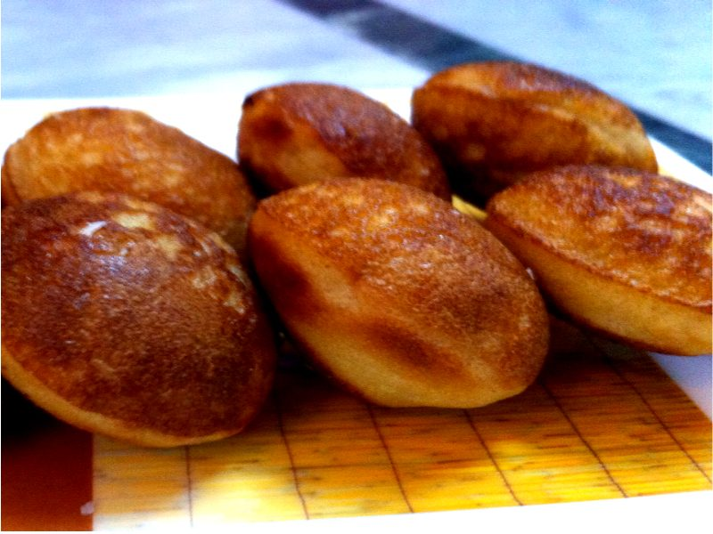

Contains: sesame
Ingredients
Quantities for 6.
- 1 cup, raw Riceidli or ponni rice, soaked 3 hours
- 2 tbsp Toor Dal
- 2 tbsp Chana Dal
- 2 tbsp Urad Dal
- 2 tbsp Moong Dal
- 200g, grated Jaggerydark palm jaggery if you can get it
- 1/3 cup, finely chopped into small bits Coconut
- 1/2 tsp Dry Ginger Powdersukku, the traditional finish
- 4 pods, seeds crushed Cardamom
- 1 tbsp Sesameoptional
- 2 tbsp Rice Flourto adjust the batter if it loosensoptional
- 1/4 tsp Salt
- 120ml Water
- 500ml, for deep frying Neutral Oil
Cookware
stovetop, kadhai, blender
Checked against the ingredient list for ten allergens: milk, egg, fish, crustaceans, tree nuts, peanuts, sesame, mustard, soy and gluten. Brands vary, so read the label on anything new to you.
Before you start
- Soak the rice and all four dals together in plenty of water for 3 hours, then drain well.
- Grind the batter at least 1 hour before frying and let it rest. It thickens as it stands and fries cleaner.
- Melt and strain the jaggery syrup first; unstrained jaggery carries grit that burns in the oil.
Method
- Drain the soaked rice and dals and grind to a slightly coarse batter with about 80ml water, thicker than dosa batter.Leave a little grain in it. A perfectly smooth batter gives a dense, cakey appam.
- Melt the jaggery with 40ml water over low heat until it dissolves, then strain through a fine sieve into the batter.
- Stir in the chopped coconut, crushed cardamom, dry ginger powder, sesame and salt.
- Cover and rest the batter 1 hour at room temperature; it should be thick enough to drop slowly off a spoon.
- If it has loosened, beat in the rice flour a spoon at a time until it holds a soft mound.
- Heat the oil in a kadhai to medium. A drop of batter should rise in about 4 seconds.Too hot and the outside browns before the middle cooks; too cool and the appam drinks oil.
- Slide in tablespoons of batter, 4 or 5 at a time, and fry 3 minutes until the undersides are deep brown.
- Turn each one and fry a further 2-3 minutes until the edges are crisp and the centre puffed.
- Lift onto a rack rather than paper so the crust stays crisp, and repeat with the rest of the batter.Let the oil come back up to temperature between batches or the later ones will be greasy.
- Cool 10 minutes before eating. The inside is molten jaggery straight out of the pan.
Storage
Keeps 3 days in an airtight tin at room temperature. Crisp them for 4 minutes in a hot oven before serving; do not refrigerate, they go hard.
Nutrition Good estimate
Low protein: 7 g a serving, 6% of the calories
| Per serving126 g | Per 100 g | |
|---|---|---|
| Calories | 452 kcal | 359 kcal |
| Protein | 6.7 g | 5 g |
| Carbohydrate | 75.2 g | 60 g |
| of which sugars | 34.4 g | 27 g |
| Fibre | 3.3 g | 3 g |
| Fat | 14.4 g | 11 g |
| of which saturated | 2.8 g | 2 g |
| of which unsaturated | 10.9 g | 9 g |
Nearest database match used for jaggery, urad dal. Estimated from raw ingredients using USDA FoodData Central.
More like this: Vegan Indian recipes · Vegetarian Indian recipes · Gluten-free Indian recipes · Dairy-free Indian recipes · No onion no garlic recipes · Tamil Nadu recipes
Times, yields, allergens and nutrition are guidance. Use your own judgement on doneness and on storing. More in About.